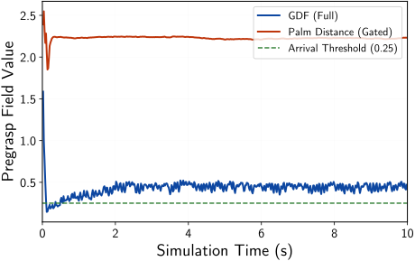

Robot Learning · Control · Simulation
Reinforcement Learning for Robotics
Demonstration-Guided Policies · Residual Reinforcement Learning
I develop and evaluate reinforcement learning algorithms for robotics, including demonstration-guided dexterous manipulation, residual RL for bimanual assembly, and geometric reward design.
DAPG Reproduction · MuJoCo / Adroit
Demonstration-Augmented Learning for Dexterous Relocation
The Adroit relocation task requires the robot to grasp an object and move it to the green target. I reproduced dexterous relocation results using Rajeswaran et al.’s Demonstration-Augmented Policy Gradient (DAPG) [1] implementation in MuJoCo / Adroit. Behavior cloning from 25 demonstrations initialized the policy; DAPG training then refined it. I evaluated the initial and trained policies over 100 episodes with held-out initial conditions.
The trained DAPG policy achieved sustained object relocation under both deterministic and stochastic action selection, whereas behavior cloning did not succeed in either mode. The paired recordings show the comparison with deterministic action selection.
Expert Demonstrations
25 relocation demonstrations from the authors’ dataset.
Behavior Cloning
Initialize the policy by imitating demonstrated actions.
DAPG Training
Refine the policy with demonstration-augmented policy gradients.
Held-Out Evaluation
Compare behavior cloning and DAPG over 100 episodes.
Training Configuration
| Demonstrations | 25 demonstrations from Rajeswaran et al.; 9,942 samples |
|---|---|
| Training | 5 BC epochs, then 100 DAPG iterations; 4 million control steps |
| Algorithm | Authors’ BC/DAPG implementation and example configuration |
| Runtime | Gymnasium Robotics 1.2.0; MuJoCo 2.3.7 |
| Final Evaluation | Reset seeds 40000–40099; 200 steps per episode; sustained object relocation |
Residual Reinforcement Learning · Bimanual Assembly
Residual Learning Allocation for Multi-Phase Tasks
With a limited interaction budget, residual learning must select the phases and action components to correct. We define completion gain as the change in full-task completion probability when a state-feedback controller substitutes selected base-policy action components during a phase. Paired gain estimates determine correction support and allocate phase-start training episodes in proportion to positive estimated gains. This allocates practice by estimated completion gain rather than detected-failure frequency; collection, gain estimation, training, and validation share an interaction budget.
In the paper’s learned-residual bimanual assembly experiment in Isaac Lab / GPU PhysX, controller substitution yielded a positive estimated completion gain only during release. We therefore trained a residual to correct all 26 joint-position targets during release, with the frozen diffusion base controlling the other phases.
In matched continuations from held-out release-start states, the learned correction increased completion of the task remainder by 16.9 percentage points (95% weighted state-bootstrap interval [7.3, 26.5]). The completion monitor checked that the part was seated, the hands had released and withdrawn, and the terminal dwell was complete.
In the separately reported ordinary-reset evaluation, the frozen base completed 50/288 full tasks and the residual policy completed 47/288. The completion-rate difference was -1.0 percentage points (95% bootstrap interval [-6.9, 5.2] for the difference of independent completion rates), with no clear improvement from reset.
Residual Learning Allocation Paper
Training and Evaluation Protocol
The release-only residual was trained from seven recorded release-start states. The evaluated checkpoint was selected at 120,000 simulated decisions using training completion, before held-out states were recorded. Both conditions used the same frozen base, physics and camera profile, 75 s horizon, and full-task completion monitor.
The release-start study pooled 17 evaluations of 16 pairs each, using 130 distinct release-start states recorded from 448 base episodes across 14 held-out seeds. Each pair restored the same state and used shared noise; repeated starts used different noise draws. The reported interval resampled release-start states while retaining the pairs that shared each state. Completion differences were positive in 15 evaluations, zero in one, and negative in one.
The ordinary-reset comparison comprised 18 evaluations of 16 episodes per condition with a 5 mm reset-offset range. These episodes were compared as independent samples, using a bootstrap of the difference in completion rates.
Earlier Reinforcement Learning with Prior Data (RLPD) Controller Integration
Earlier Controller-Integration Results
I adapted Reinforcement Learning with Prior Data (RLPD) [2] to learn bimanual assembly corrections from feedback-controller demonstrations and online experience. The residual policy supplies bounded corrections to arm joint references, and the feedback controller uses the corrected references during execution.
The A7-L6 bimanual robot manipulator stabilizes the housing, acquires and transfers the part, and completes alignment and insertion before releasing the objects and withdrawing. The initial and updated residual policies each completed all 12 evaluations across three friction conditions.
I trained a residual policy for seven arm joint references using 6,300 prior transitions and 6,300 online decisions, with 100 actor updates and 2,000 critic updates.
Training Data
Feedback-controller demonstrations and online experience.
RLPD Training
Learn bounded residual commands for arm joint references.
Policy + Feedback Control
Combine learned corrections with the feedback controller during execution.
Bimanual Assembly
Acquire, transfer, align, and insert the part before withdrawal.
The friction-stratified results report completed assemblies for the feedback controller, the zero-residual configuration, and the initial and updated residual policies. The feedback controller and the zero-residual configuration also completed all three reference trials. The learned-policy results establish successful execution with residual commands across these conditions.
Assembly Results by Friction
| Friction | Feedback Controller | Zero Residual | Initial Policy | Updated Policy |
|---|---|---|---|---|
| 0.70 | 1/1 | 1/1 | 4/4 | 4/4 |
| 0.65 | 1/1 | 1/1 | 4/4 | 4/4 |
| 0.60 | 1/1 | 1/1 | 4/4 | 4/4 |
Scripted Expert Controllers · Isaac Sim / PhysX
Scripted Bimanual Expert Demonstrations
Scripted reference controllers drive the A7-L6 bimanual robot manipulator through key–housing assembly and box loading in Isaac Sim. The assembly requires alignment and insertion; box loading requires maintaining the opening while placing the insert. Each video presents the execution from three synchronized camera views.
Key–Housing Assembly
Box Loading
Learned-policy demonstrations: Diffusion Policy Assembly · Behavior Cloning for Box Loading
Reward Design · Isaac Lab / PhysX
Geometric Reward Evaluation for Pregrasp Positioning
To evaluate geometric rewards for dexterous pregrasp positioning, I trained Proximal Policy Optimization (PPO) policies in 1,024 parallel Isaac Lab environments.
Pregrasp Reward Comparison
For a fixed-base Unitree G1 equipped with a RealHand L6, I designed a Grasp Distance Field (GDF) reward based on proximity to candidate arm–hand configurations. I compared policies trained with this reward against policies trained with a palm-to-object distance reward.
Evaluation Results
I counted a pregrasp arrival when the GDF value fell below 0.25 during an episode, using a smooth minimum of weighted joint-space distances to compute the field value.
| Reward Configuration | Pregrasp Arrivals | Lifts |
|---|---|---|
| GDF (Full) | 64 / 64 | 0 / 64 |
| Palm Distance (Gated) | 0 / 64 | 0 / 64 |
The full GDF policy reached the candidate pregrasp set in every evaluated episode, whereas the gated palm-distance policy reached it in none; neither policy completed a lift. The reward configurations differ in closure and field-decrease terms as well as the geometric reward.

References
- Learning Complex Dexterous Manipulation with Deep Reinforcement Learning and Demonstrations.
Aravind Rajeswaran, Vikash Kumar, Abhishek Gupta, Giulia Vezzani, John Schulman, Emanuel Todorov, and Sergey Levine.
Robotics: Science and Systems (RSS), 2018.
arXiv:1709.10087 · Authors’ Implementation - Efficient Online Reinforcement Learning with Offline Data.
Philip J. Ball, Laura Smith, Ilya Kostrikov, and Sergey Levine.
International Conference on Machine Learning (ICML), 2023.
arXiv:2302.02948 · Authors’ Implementation